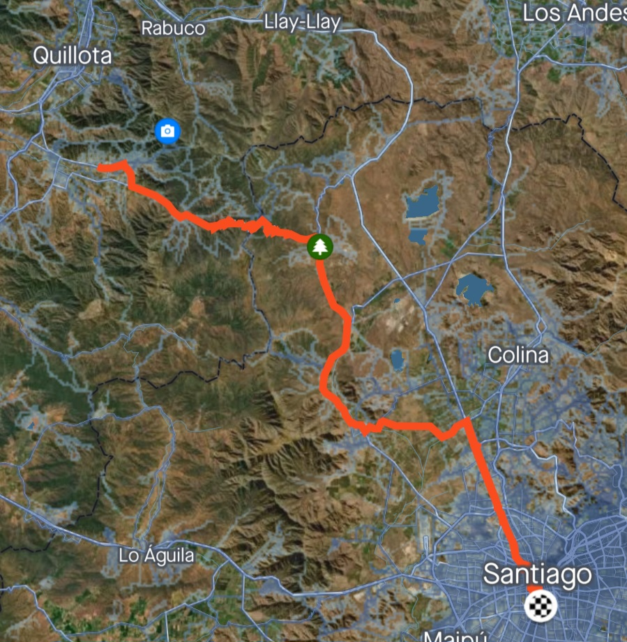
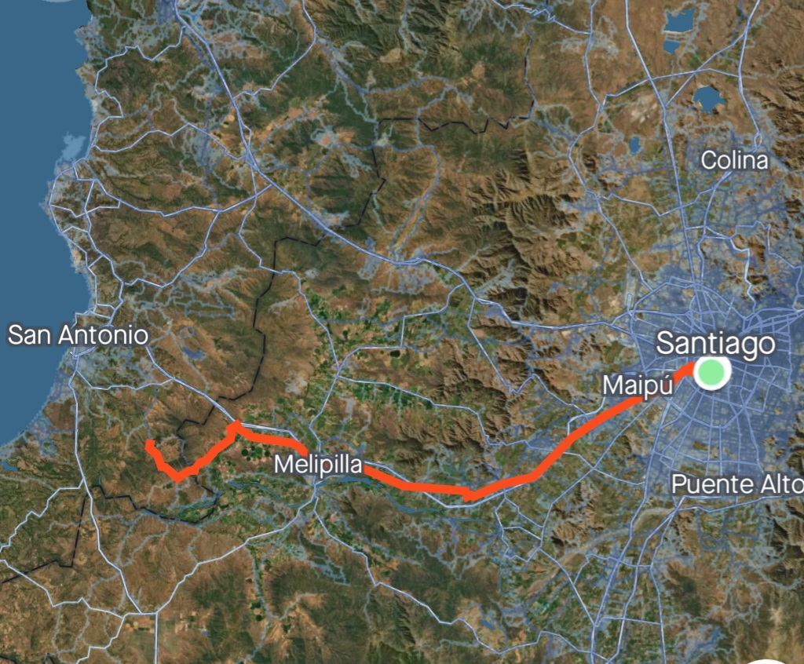
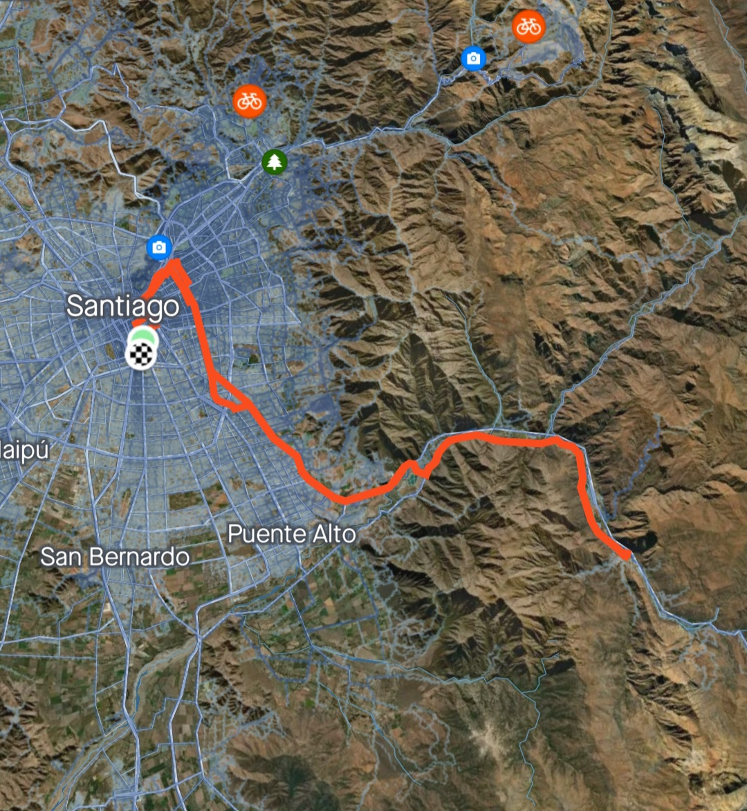

ULTRA
RACE
Carrera Ultra Ciclismo
EVENTOS

Santiago - Olmué - Santiago
Dist 220km // Alt+ 2343m
Santiago - Cuncumén - Santiago
Dist 190km // Alt+ 1492m


Santiago - El Toyo - Santiago
Dist 120km // Alt+ 1140m